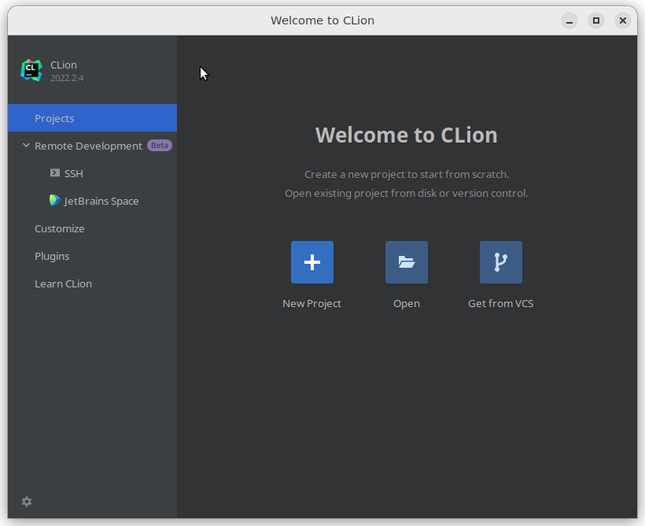
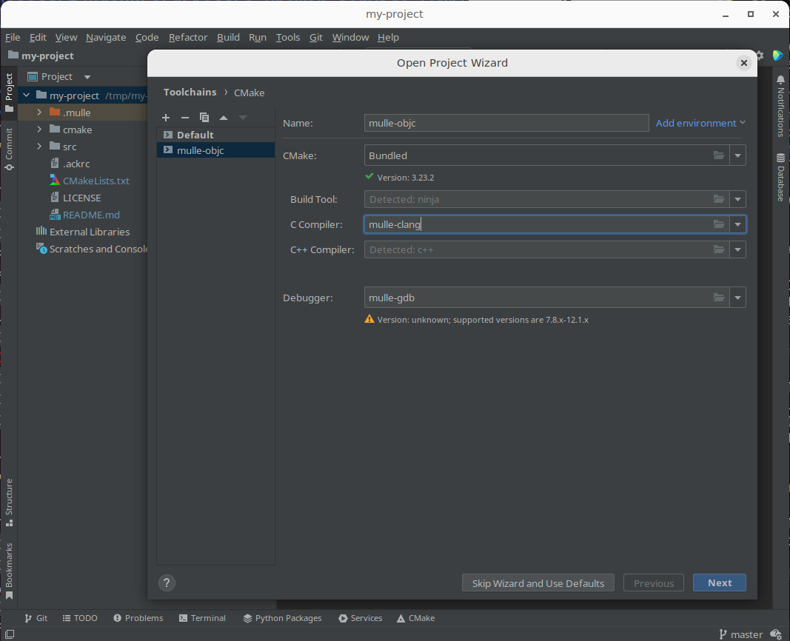
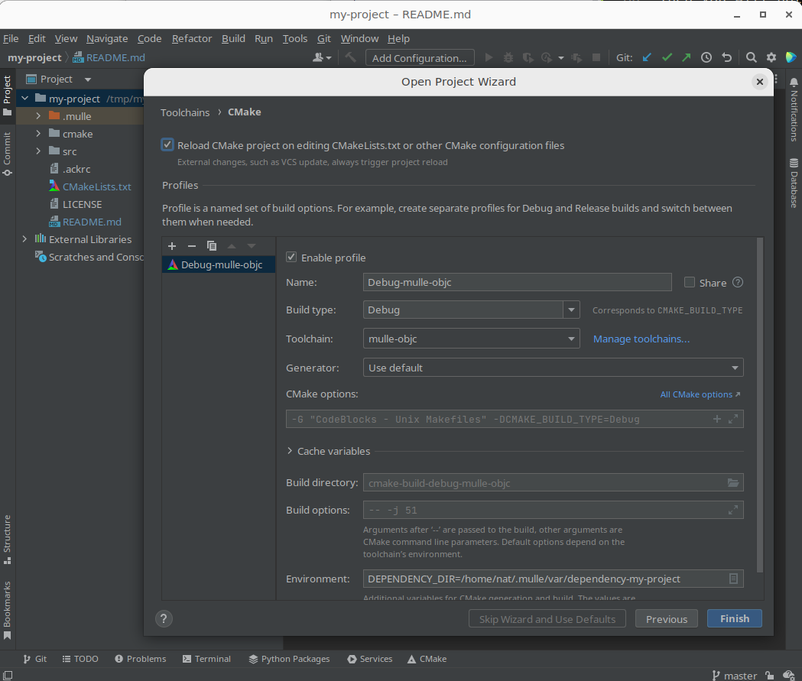
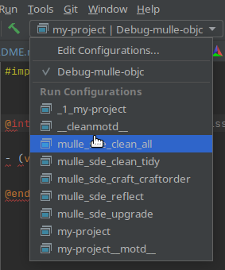
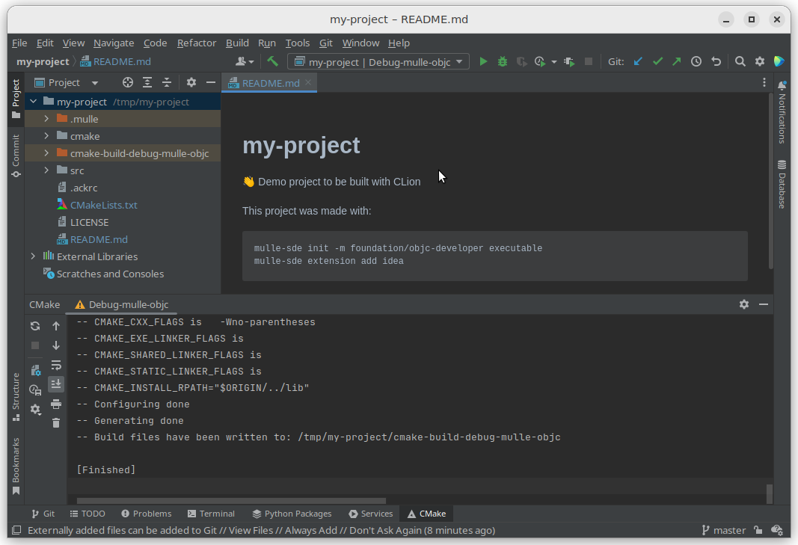
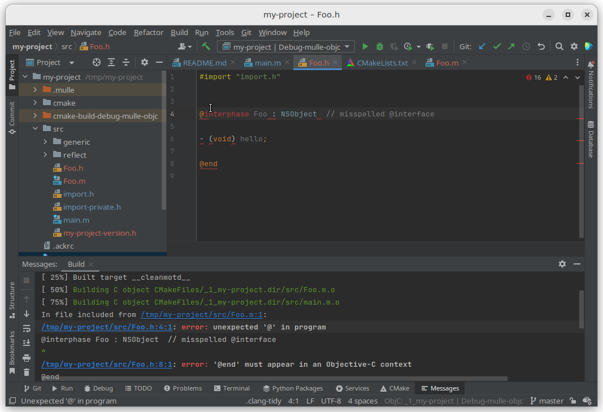

CLion
CLion) is an IDE by Jetbrains. It’s a commercial offering, but you get a 30 day evaluation license the first time you download it. So it’s perfect for playing around with mulle-objc. Well almost perfect. We need a special setup, otherwise CLion will develop the annoying tendency to hang up your system.
First Start
The first time you start CLion it will come up with a window like this:

Let’s just keep it this way for now. There is no “New Project” support for mulle-objc (yet ?), so we have to create the project in the terminal.
Create a mulle-objc project
If you haven’t installed mulle-sde go back to the Intro and follow the instructions there.
You need a terminal to create a mulle-objc project. Maybe the easiest way is to clone an existing mulle-objc project and modify it like so:
git clone https://github.com/mulle-cc/mulle-objc-idea.git my-project
cd my-project
mulle-sde upgrade
mulle-sde project rename my-project
mulle-sde-developer provides the idea extension. This extension ensures, that CLion ignores files that are non-editable.
When you create a new project from scratch, add the idea extension:
mulle-sde init -d my-project -m foundation/objc-developer executable
cd my-project
mulle-sde extension add idea
The idea extension is not required for mulle-objc projects, but makes them
a bit nicer in CLion. Without the idea extension, you will not see an
.idea folder in your project initially.
Change the build environment
CLion has an indexer, that continually checks your project directory for
changes. Though you can tell the indexer to not index certain places, in
practicality that doesn’t always seem to work.
mulle-sde will create three folders stash, dependency, kitchen.
When the indexer hits stash, with its large amount of sources and possible
symlinks between each project, you may incur slowness or worse.
The most foolproof method to keep the Clion indexer away from those folders, is
to store them outside of the project. So lets the create in the my-project
folder, these mulle-sde settings to store build folders under
~/.mulle/var/... or wherever you find convenient:
mulle-sde --search-nearest environment --host-this \
set DEPENDENCY_DIR '${HOME}/.mulle/var/dependency-${PROJECT_NAME}'
mulle-sde --search-nearest environment --host-this \
set KITCHEN_DIR '${HOME}/.mulle/var/kitchen-${PROJECT_NAME}'
mulle-sde --search-nearest environment --host-this \
set MULLE_SOURCETREE_STASH_DIR '${HOME}/.mulle/var/stash-${PROJECT_NAME}'
It is important to make these changes before opening the project, as the indexer and the build process will start right away.
You can place these commands in a file called ~/bin/post-mulle-sde-init.
Then you will not need to execute these commands for every new project created
with mulle-sde init.
The following command will give you the location of the dependency folder
on the file system, which will be needed in the next step:
mulle-sde environment get --output-eval DEPENDENCY_DIR
Open the project
Open the project from within Clion now with “File /Open Project”. At this time the “Open Project Wizard” should run. It will let you choose the default toolchain or you can configure a new “System” toolchain.

This is an important step. You should change the C compiler to mulle-clang.
Usually mulle-clang should be in your PATH and you can just type it in.
If not, you can enter the installation path by clicking the folder button.
(Tip: look in /opt/mulle-clang-project/<version>/bin or /usr/local/bin)
Do the same for the debugger mulle-gdb (“Disclosure Triangle / Custom executable”,
even though it’s grayed out).
Next up is the cmake configuration screen. Here you have to configure the “Toolchain” to the toolchain you setup in the previous step. And you also enter the ‘DEPENDENCY_DIR’ environment variable.
I would recommend to check “Reload CMake project on …“.

The IDE will immediately spring into action and build your project.
If you chose to keep the
dependencyfolder in project, you don’t need to set theDEPENDENCY_DIR.
Run configurations
To see the list of available configurations click the disclosure button on the Clion configurations / target bar:

| Configuration | Description |
|---|---|
| mulle_sde_reflect | When you add or remove files from the project, you need to run “Reflect” so changes will be picked up. You do not need to edit CMakeLists.txt |
| mulle_sde_clean_all | Clean your projects build products and intermediate files |
| mulle_sde_clean_tidy | Also clean downloaded dependencies. They will need to be refetched. |
| mulle_sde_craft_craftorder | Rebuild dependencies |
| mulle_sde_upgrade | After installing a new mulle-sde version, upgrade the project. Cleans caches… |
CLion will have picked up these configuration from targets in the cmake files.
Not all configurations are interesting. You can safely configuration any target
that is preceeded with an _ underscore.
You run a configuration by selecting it and then using the “green hammer”, to the left of the selector box.
Development Cycle
At this point the IDE should be in the process of fetching and building the dependencies, or maybe its already done. Watch the status line on the bottom to see what’s happening. So lets get right into debugging.

Debug
Navigate to src/main.m now and click besides the line number to set a (red)
breakpoint. Now run your program in the debugger with “Run / Debug…“.
The debugger should immediately stop on the breakpoint:

From here on use the CLion documentation for more help. The CLion debugger is very nice and makes this a standout feature in my opinion.
Edit
Create a new class in “Sublime Text” to demonstrate the
“Edit->Reflect->Craft(->Debug)” cycle that is the key development cycle of
mulle-sde projects.
First up create two new files in src namely src/Foo.h and src/Foo.m.
(Right click on the src folder and “New File”).
Let’s put an error into the file for demonstration purposes:
#import "import.h"
@interphase Foo : NSObject // misspelled @interface
- (void) hello;
@end
#import "Foo.h"
#import "import-private.h"
@implementation Foo
- (void) hello
{
mulle_printf( "Hello\n");
}
@end
Tip
If you like a class with template code, you can use
mulle-sde add src/Foo.minstead. This will also make the next “Reflect” step superflous.
Reflect
Now run the “mulle_sde_reflect” configuration. Choose it from the configuration selector box and then press the green hammer, to the left of it.
The reflection places your source files into the cmake build system and adds
them to your list of C headers. You can observe the change in
cmake/reflect/_Sources and cmake/reflect/_Headers as well as in
src/reflect/_my-project.export.h.
You only need to “Reflect” if you have added or deleted files from the project.
Craft
Return to the default configuration “my-project”. Now with the syntax error in place, the next craft will immediately preempt with an error:

Important Tip
Clion caches a lot. If you make some changes outside of the IDE to the project, you need to clean its CMake cache (Menu: “Tools/CMake/Reset Cache and Reload Project”). Then run the “Configuration”
mulle_sde_clean_all, to rebuild everything.There is another cache cleaner (“Menu: “File/Invalidate Caches…”), but it does not affect CMake. It might be good to run this too, if something appears wonky.
That wraps it up for CLion here.